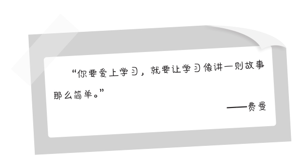
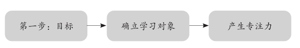
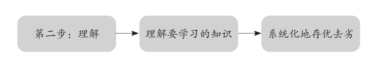
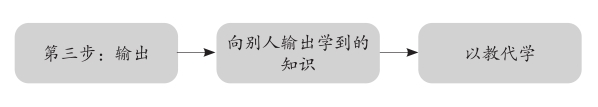
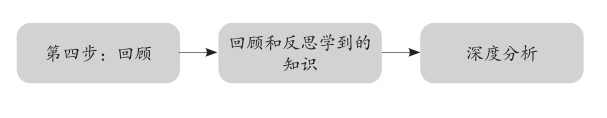
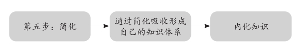

第二章
何为“费曼学习法”
理查德·费曼对华而不实的东西毫无兴趣，这位不拘小节的物理学天才对知识的理解到了一种收发自如的境界。他可以轻松地向任何一个人解读最复杂的知识，并且保证对方能够听懂。当我第一次接触到费曼的学习体系时，便立刻意识到这正是中国的年轻人最需要的。我也积极地在课堂和在线教育中推荐给自己的学生。
正如第一章讲到的，在越来越快的社会节奏和海量的信息影响下，掌握一门知识相比过去变得更困难了。和20年前比起来，我们的时间不再充足，信息来源过于丰富，信息本身也真假难辨。在学习时，很难短时间内吸收、消化太多的信息。就像做饭一样，我们需要10分钟内从繁杂的食材中找出自己感兴趣的材料，再按食谱做一顿符合口味的佳肴，还要把它吃下去。这太难了，不是吗？这正是互联网社会的副产品，它的超快节奏对几乎所有的事情都提出了考验。互联网不但让知识碎片化，也肢解了我们的思维。
现在，你很早就要去上班，挤地铁，或在蠕动的车流中耗费时光，一线城市的地铁拥挤嘈杂得让你没一点学习的心情；到了晚上，往往10点才能从工作中解放出来，有了一点空闲可以安静地独处，这时身体又提醒你该休息了。一天下来，读书的时间很少，精力也严重不足。传统方式又能在这种条件下帮你学到多少有益的知识呢？
即便你爆发小宇宙，从时间手里抢时间，每天能够挤出三两个小时，学习的效果可能也差得让人不忍目睹。这就是为什么费曼学习法正日渐成为全球创新组织和青年精英的第一选择，它简单有效的学习思路可以应对当下及未来我们对各类知识的需求。因为它不但节省时间，还在有限的时间里提供了最高的学习效能。
迷人的“费曼技巧”
作为著名的诺贝尔奖物理学家，理查德·费曼非常理解“记住知识”和“了解知识”之间的差别。这也是他成功最重要的原因之一。费曼在研究和教学的过程中创造了费曼学习法（也被称为“费曼技巧”），确保了他比别人对于事物的了解更为透彻。

费曼学习法的内涵就是这么迷人：它重新定义了学习的本质，学习不再是枯燥的书写和记忆，而是和讲故事一样简单！运用费曼的学习技巧，我们只需要花上20分钟就能深入地理解一个“知识点”，形成深刻和难以遗忘的记忆。要知道，知识是区分为两种类型的，大部分人关注的其实是错误的那一类，即只是记住了知识的名称。比如，一个公式，一个概念，一个原则，一个数据，一个现象，一个事件。把它们记下来并不代表你真的学到了这些知识，哪怕倒背如流，你也只是将它们存储了下来而已。这种行为配得上一声鼓励，但不值得击节称赞。
正确的学习是，我们了解了这些知识的内核，知道它们是怎么回事；我们也可以从自己的视角重新解读它们，并且向外传播，让更多的人知道。这两者绝非一回事。
为了实现这个目的，费曼学习法提供了四个关键词：Concept（概念）；Teach（以教代学）；Review（评价）；Simplify（简化）。在这个基础上，本书提炼总结出了五个步骤：确立目标；理解目标；输出；回顾；简化。通过这五个步骤，我们能够充分地将费曼“以教代学”的学习方式开发到最高的效率，吸收有用的知识，创造自己的知识体系。
通俗地说：验证我们是否真正掌握了一种知识，就看能否用直白浅显的语言把它讲清楚。无论它多么复杂，都可以让一个从未接触过这个知识的旁观者听明白。
当费曼学习法受到人们的关注和被推广开来时，受到了广泛的欢迎。费曼不仅重新定义了学习，也改变了全球数百万人的学习思维，成为了精英课堂的必备工具。事实上，不仅是学习，工作也能用得到，而且效果显著。比如，有数十所世界级大学与跨国企业联合开展的培训中运用了费曼学习法，很多创新型公司的CEO和高管从中受益。迄今为止，我们能在很多知名人物的演讲中看到费曼学习法的影子，他们一边学习和成长，一边用输出的方式将学到的内容普及给受众，产生了良性的正反馈。
简单高效的思维模式
为什么费曼学习法具有这么大的魔力呢？因为它是对人的思维模式的深度改造。也许你可以不学习，但你无法不思考。它也并不是有些人声称的“专家学习法”——具备一定的理论和实践基础才能如臂使指，实际上，即使对某些领域一无所知的新人也能借助费曼学习法使自己的知识水平迅速上一个台阶。
第一，好的思维需要正反馈。
思维方式的选择是无论个人还是组织在解决问题时都会遇到的问题。我们都知道，成功的个人和组织总是擅长系统性地思考，其中一个很重要的概念就是“正反馈”（也叫“放大反馈”）。它如同一个增长的引擎，是一个驱动系统加速发生变化的过程，可以在思考的过程中实现“自增强”。费曼学习法为我们的思维提供的便是正反馈，能够促进知识和能力在学习中的自增强。
比如，我每天锻炼身体，跑步，健身，能够让我感觉良好。我会向朋友介绍我的锻炼经验，然后继续坚持锻炼，总结出更好的健身方法，于是我的感觉越发良好。这便是一个正反馈。我们向团队成员分享一个技术信息、工作经验，能够活跃沟通的氛围，良好的沟通氛围能够激发员工的思考积极性，努力学习并踊跃地实践，再加入讨论，共同输出更多高质量的经验，这也是一个正反馈的过程。重点是你不要独自钻研和学习，要多和外界互动。
第二，输出加快思考的成熟。
美国科学作家罗伯特·莫顿（Robert K.Merton）在1968年提出了著名的“马太效应”：“任何个体、群体或地区，一旦在某一个方面（如金钱、名誉、地位等）获得成功和进步，就会产生一种积累优势，就会有更多的机会取得更大的成功和进步。”它表达的内涵是，只要我们在某一个领域获得了一点优势，就可以不断扩大这个优势，成果也会越来越大。
费曼学习法的作用就是一种马太效应。在对某个知识的学习和思考中，一次成功的输出也会同时增强输入的能力，从而使得下一次输出的成功可能性更大，下一次取得的成果又会促进再下一次的学习和思考，壮大自己的知识体系和应用能力，加快思考的成熟。
举个简单的例子，当你阅读一本科普著作，怎样的方式最有利于快速和深刻地理解这本书的内容呢？传统的方法是重复阅读，同时检索资料加深理解。十几年前，为了读通英国物理学家斯蒂芬·霍金的《时间简史》，我花费了两年的时光，对比阅读了七八种书籍，查证了上千个术语和公式。这当然是一个严谨的途径，效果也不错，但在今天实在太慢了。你不可能在一本书上投入这么长的时间。
还有一个办法就是费曼的思路，为自己准备一份阅读笔记，抽离它的核心内容，然后一边通读，一边向别人阐述这本书的主要观点。这些观点分别归纳为不同的问题，每个问题都有一个“霍金式答案”——还有你的个人理解，你要讲给别人听。在输出的过程中，你想学到的东西也在向大脑输入。这是一个爆炸式的、积极的化学反应，你会发现时间被大大缩短，过去通读五遍才能理解的内容，用这个方法只用两遍，即整理、输出和复述、简化。在加快记忆的同时，学习的质量也得到了提升。
第三，费曼学习法让思考可以量化。
我们对任何问题的量化思考都体现在六个方面，每个方面都能用到费曼技巧。
▲方向→锁定思考的主要方向。
将思考量化的第一步，是列出所有备用的方向，进行对比选择，锁定一个主要的方向。“方向”既是你应该重点解决的问题和环节，也可能是最有利于思考的突破口。军队攻击敌方阵地、技术人员开发产品、丈夫取悦妻子、父母教育孩子，都需要从备选中找出一个主攻方向。
▲归纳→确立思考的主要逻辑。
学生求解方程式，要确立一种算法；评判历史事件，要树立一个历史观和立脚点；我们思考问题，要有一个基本的立场、三观和逻辑；阅读和学习，哪怕是先入为主，也要有自己的分析方式。逻辑也可以量化，确立了自己的逻辑，就可以有针对性地收集、整理和归纳信息，不用“走一步看一步”。
▲验证→验证思考的效果。
在费曼技巧中，我们通过“输出”来验证自己学到的知识，也就是以教代学。我们也可以用它来帮助思考，把自己对于某个问题的见解（观点）和分析（为什么）阐述给别人，告诉对方自己的思路，可以起到很好的验证的作用。
▲反馈→反馈正确和错误。
我们用输出的方式验证自己的观点、论据和逻辑，从听众那里收取反馈，看他是否能理解和接受，并听一听对方的想法。在这个环节中，我们接收到两种信息。第一种是“正确”——对方的肯定；第二种是“错误”——对方的否定。根据这两种反馈，我们可以调整之前的思考，强化正确的内容，修正或删除错误的地方。
▲简化→把复杂的思考过程简单化。
这个环节就像制作一张缩略图或者一份简报，提炼出思考的要点，能一目了然地看清思考的目标、思考的逻辑、思考的结果，并能够三言两语总结出来，把这个过程变得易于理解。就像费曼技巧的简化环节。比如，在仅有5分钟的碰头会议中向客户讲清楚“为何需要设计一座双孔桥梁”或“该项目最佳的财务方案”。这就是把复杂的思考过程简单化，目的是让别人很快便能听懂。
▲吸收→消化思考的成果。
优秀的思考者总是有自己的思维体系，在最后一步，要将思考的成果消化吸收，转化为可以应用的内容。解决工作上的问题，处理学习中的难题，调和家庭或人际关系等，这些都是思考的结果。更重要的是，在思考的过程中逐渐形成自己简单高效的模式。越有力量的智慧实践起来就越简单！
费曼学习五部曲
费曼学习法共分为五个步骤，本书从第二部分开始，将详细地介绍每一个步骤的原则和具体的应用技巧。无论学习还是工作，甚至其他事项的思考，这些简单易行的步骤都能为我们创造十分可观的效果。

选择自己想要掌握的知识和技能，并且要真正地理解学习它的必要性，在这个前提下产生专注力。专注是一切成功学习的基础。

对我们要学习的知识、概念等进行归类、解构和对比，系统地理解这些内容，存优去劣，将我们需要的知识筛选出来，选择合适的方式进行学习。

在一个需要向别人传授的场景中“以教代学”，向那些不熟悉该知识的人阐述你的见解，向他们解释这些知识，用他们能理解的方式及最简单的语言做到这一点。

通过回顾和反思，从输出的过程中发现自己不能理解的地方，或者无法简单解释之处，记录下来，回到第二步，查看资料来源，弥补薄弱的知识点，或者修正错误的、不符合实际的知识点，直到可以进行再一次的输出。

重复上面的步骤，不断地简化和吸收，直到这些知识内化为你的知识体系，能够为我所用。内化是一切学习的终极目的。如果不能将知识成功地转化为自己需要的东西，学习的质量就会大打折扣。